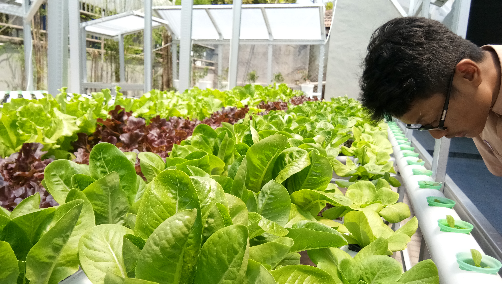
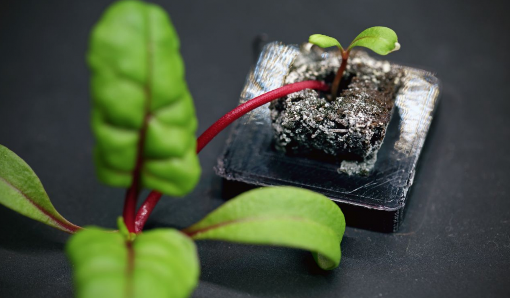

Home
Article
Gallery
Shop
FAQ
Contact
About

September 02,2019. 6.43 pm
Penelitian Terbaru dari SMA 1 Jawa Timur
Siswa-Siswi dari SMA 1 Jawa Timur ini telah menanam bayam
selama 2 bulan dan bayam yang dihasilkan terlihat segar

August 21,2019. 9.21 am
Kesalahan dalam Teknik Vertikal Farming
Menanam dengan teknik vertical farming sangatlah mudah namun ada
beberapa hal yang perlu diperhatikan dalam prosesnya. apabila tidak,
maka akan terjadi kecacatan pada tumbuhan